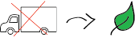

Waarom kweken?
Wat maakt kweken zo waardevol?
Het is goed voor het milieu. Door biologisch te telen hoeven de groenten en fruit niet van ver te komen, wat ontzettend goed is voor het klimaat.
Het laat je bewuster door het leven gaan. Doordat je bezig bent met het eten dat je zelf kweekt, let je eerder op je voedingspatroon. Wat eigenlijk altijd mooi is. Hierdoor leer je bewuster om te gaan met consumeren, wat ontzettend duurzaam is!
Je eigen moestuin hebben scheelt kosten, tot wel 25%! Het is goedkoper om zaadjes te kopen en ze te verbouwen dan om ze in de supermarkt te kopen. Hierdoor is de boodschappentas ook een stuk minder zwaar!
Het is een leuke (offline) hobby. Je blijft in beweging doordat je met je handen in de aarde zit, wat onwijs goed is voor je. Kijk daar deze documentaire over. Verder is het een relatief rustige activiteit om te doen en daardoor mooi tijdsverdrijf.